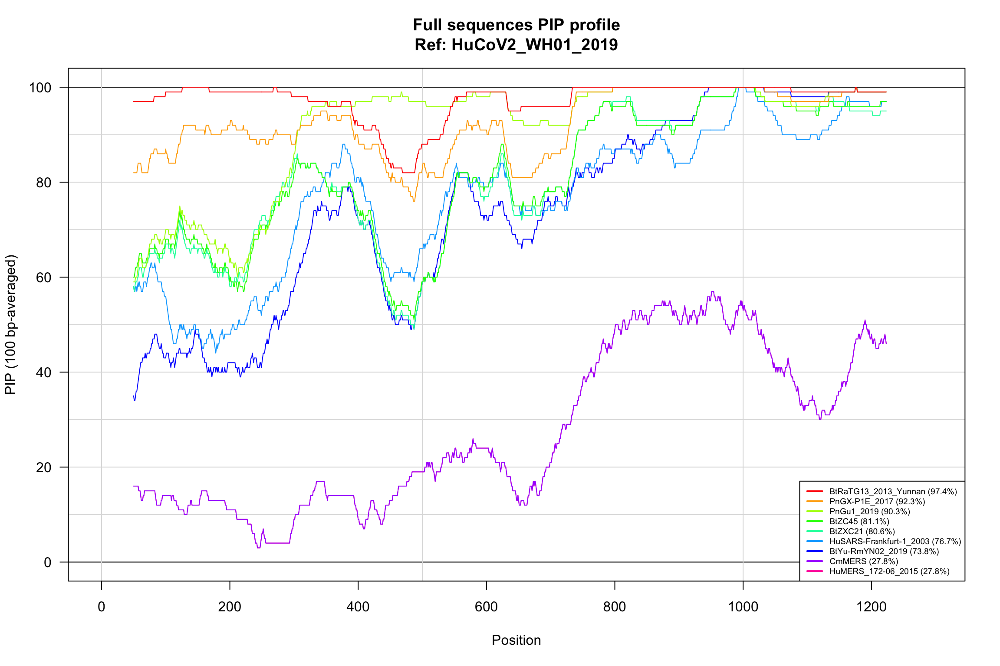
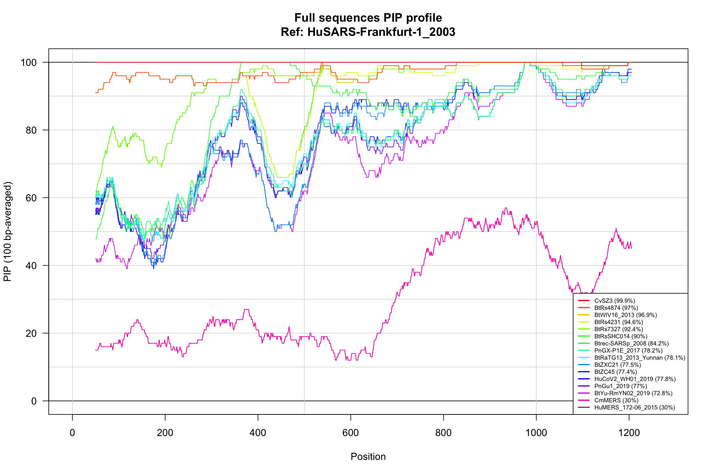

PIP profiles of coronavirus spike proteins - DNA and protein sequences
Jacques van Helden
2020-05-22
#### General parameters for the analysis ####
## Use (or not) GIDAID sequences
##
## A few genoes were not available in NCBI Genbank at the time of
## this analysis, and had to be downloaded from GISAID. These sequences
## can however not be redistributed, they should thus be downloaded
## manually to reproduce the full trees. Alternatively, useGISAID
## can be set to FALSE, whcih will reproduce the analysis with almost
## all the sequences of the paper.
useGISAID <- TRUE
#### Define directories and files ####
dir <- list(main = '..')
dir$R <- file.path(dir$main, "scripts/R")
#### Create output directory for sequences ####
seqPrefix <- "spike_proteins"
dir$outseq <- file.path(
dir$main, "results", seqPrefix, "PIP_profiles")
dir.create(dir$outseq, showWarnings = FALSE, recursive = TRUE)
list.files(dir$outseq)[1] "Icon\r" "one-to-n_alignments_ref_HuCoV2_WH01_2019" "one-to-n_alignments_ref_HuSARS-Frankfurt-1_2003" "spike-protein_alignments_ref_HuSARS-Frankfurt-1_2003"## Instantiate a list for output files
outfiles <- vector()
## Input files
infiles <- list()
## Sequence collection
## Supported:
## collection <- "around-CoV-2" # ~20 sequences
## collection <- "selected" # ~60 sequences
## collection <- "all" # ~60 sequences
collections <- c("around-CoV-2", "selected", "all")
# collection <- "around-CoV-2" # ~20 sequences
# collection <- "selected" # ~40 sequences
collection <- "all" # ~60 sequences
## Sequence dir and files
if (useGISAID) {
dir$sequences <- file.path(dir$main, "data", "GISAID_genomes")
collection <- paste0(collection, "-plus-GISAID")
} else {
dir$sequences <- file.path(dir$main, "data", "spike_proteins")
}
seqPrefix <- paste0("spike_proteins_", collection)
infiles$sequences <- file.path(dir$sequences, paste0(seqPrefix,".fasta"))
## Sequence sequences
if (!file.exists(infiles$sequences)) {
stop("¨Protein sequence file is missing", "\n", infiles$sequences)
}
## Load custom functions
source(file.path(dir$R, "align_n_to_one.R"))
source(file.path(dir$R, "plot_pip_profiles.R"))
## Query patterns for SARS-CoV-2
queryPatterns <- list()
queryPatterns[["HuCoV2_WH01_2019"]] <- c(
"PnGX-P1E_2017",
"PnGu1_2019",
"BtRaTG13_2013_Yunnan",
"BtZC45",
"BtZXC21",
"HuSARS-Frankfurt-1_2003",
"CmMERS",
"HuMERS_172-06_2015"
)
queryPatterns[["HuSARS-Frankfurt-1_2003"]] <- c(
"CvSZ3",
"BtRs4874",
"BtWIV16_2013",
"BtRs4231",
"BtRs7327",
"BtRsSHC014",
"Btrec-SARSp_2008",
"PnGX-P1E_2017",
"HuCoV2_WH01_2019",
"BtRaTG13_2013_Yunnan",
"BtZC45",
"BtZXC21",
"CmMERS",
"HuMERS_172-06_2015"
)
#### Add GISAID IDs to the query pattern ####
## Note that GISAID sequences are be submitted to the github repo because they cannot be redistributed
if (useGISAID) {
for (ref in names(queryPatterns))
queryPatterns[[ref]] <- append(queryPatterns[[ref]],
c("BtYu-RmYN02_2019",
"PnGu1_2019"
))
}
# message("\tReference strain: ", refPattern)
message("\tQuery patterns")
for (ref in names(queryPatterns)) {
queryPatterns[[ref]] <- unique(queryPatterns[[ref]])
message("\t", ref, "\t\t", length(queryPatterns[[ref]]),
"\t", paste(collapse = ", ", queryPatterns[[ref]]))
}#### Load sequences ####
sequences <- readAAStringSet(filepath = infiles$sequences, format = "fasta")
## Shorten sequence names by suppressing the fasta comment (after the space)
names(sequences) <- sub(pattern = " .*", replacement = "", x = names(sequences), perl = TRUE)
sequencesNames <- names(sequences)
nbsequences <- length(sequencesNames)
message("Loaded ", nbsequences, " sequences from file ", infiles$sequences)
# View(sequences)
#### Define reference and query sequences ####
refSequenceNames <- vector()
for (ref in names(queryPatterns)) {
refSequenceNames[ref] <- unique(
grep(pattern = ref, x = names(sequences),
ignore.case = TRUE, value = TRUE))
if (is.null(refSequenceNames[ref])) {
stop("Could not identify reference sequences with pattern ", ref)
}
}
## Query sequences
querySequenceNames <- list()
for (ref in names(queryPatterns)) {
# message("Identifying query sequences for reference: ", ref)
queryRegExp <- paste0("(", paste(collapse = ")|(", queryPatterns[[ref]]), ")")
querySequenceNames[[ref]] <- grep(pattern = queryRegExp,
x = sequencesNames,
ignore.case = TRUE, value = TRUE)
nbquerySeq <- length(querySequenceNames[[ref]])
if (nbquerySeq == 0) {
stop("Could not identify any query sequences with query pattern\n", queryRegExp)
}
if (length(unlist(queryPatterns[ref[]])) != length(querySequenceNames[[ref]])) {
foundPatterns <- grep(pattern = queryRegExp, x = querySequenceNames[[ref]], value = TRUE)
missingPatterns <- setdiff(foundPatterns, queryPatterns[[ref]])
message("\t",
length(missingPatterns), " Missing sequences: ",
paste(collapse = ", ", missingPatterns))
}
message("\tFound ",
"\t", length(querySequenceNames[[ref]]),
" queries for\t", ref)
## Compute some statistics about sequences sizes
sequencestat <- data.frame(
row.names = c(ref, querySequenceNames[[ref]]),
status = c("Reference",
rep("Query", length.out = length(querySequenceNames[[ref]])))
)
g <- 1
for (g in c(ref, querySequenceNames[[ref]])) {
sequencestat[g, "length"] <- length(sequences[[g]])
}
kable(sequencestat, caption = paste0("Query sequences for reference ", ref))
}The collection all-plus-GISAID contains 67 virus sequences sequences.
N-to-1 full sequence alignments
We perform a pairwise lignment between each sequences query and the reference sequences (HuCoV2_WH01_2019).
sequencesNto1 <- list()
refSequenceName <- "HuCoV2_WH01_2019"
for (refSequenceName in refSequenceNames) {
## Define output file for sequences alignments
outfile <- file.path(
dir$outseq, paste0("one-to-n_alignments_ref_", refSequenceName))
outfiles[paste0(refSequenceName, " alignments")] <- outfile
## Get sequences for reference and query sequences
refSequence <- sequences[refSequenceName]
querySeq <- sequences[querySequenceNames[[refSequenceName]]]
message("\tAligning ", length(querySeq), " query sequences",
" to reference\t", refSequenceName)
sequencesNto1[[refSequenceName]] <- alignNtoOne(
refSequence = refSequence,
querySequences = querySeq,
sortByPIP = TRUE,
# querySequences = sequences,
outfile = outfile)
}Alignment with SARS-CoV-2(ref strain HuCoV2_WH01_2019)
refSequenceName <- "HuCoV2_WH01_2019"
kable(sequencesNto1[[refSequenceName]]$stats[order(sequencesNto1[[refSequenceName]]$stats$score, decreasing = TRUE), ],
caption = "N-to-one alignment of full sequences")| pid | nchar | insertNb | insertLen | delNb | delLen | score | |
|---|---|---|---|---|---|---|---|
| BtRaTG13_2013_Yunnan | 97.40770 | 1273 | 1 | 4 | 0 | 0 | 5129.657 |
| PnGX-P1E_2017 | 92.30165 | 1273 | 3 | 8 | 0 | 0 | 4433.333 |
| PnGu1_2019 | 90.18838 | 1274 | 5 | 11 | 1 | 1 | 4131.933 |
| BtZC45 | 80.87774 | 1276 | 10 | 30 | 2 | 3 | 2872.985 |
| BtZXC21 | 80.28169 | 1278 | 11 | 33 | 3 | 5 | 2788.446 |
| HuSARS-Frankfurt-1_2003 | 76.44757 | 1278 | 8 | 23 | 4 | 5 | 2269.462 |
| BtYu-RmYN02_2019 | 73.53172 | 1277 | 16 | 50 | 1 | 4 | 1883.293 |
| CmMERS | 27.35703 | 1294 | 45 | 548 | 10 | 21 | -3617.178 |
| HuMERS_172-06_2015 | 27.35703 | 1294 | 45 | 548 | 10 | 21 | -3617.178 |
## PIP profile of full sequences N-to-1 alignments
plotPIPprofiles(
alignments = sequencesNto1[[refSequenceName]]$alignments,
windowSize = 100,
main = paste0("Full sequences PIP profile", "\nRef: ", refSequenceName),
legendMargin = 0,
legendCorner = "bottomright", legendCex = 0.6, ylim = c(0,100))

Percent Identical Positions profile over the whole sequences of SARS-CoV-2.
Alignment with SARS-CoV (ref strain: HuSARS-Frankfurt-1_2003)
refSequenceName <- "HuSARS-Frankfurt-1_2003"
kable(sequencesNto1[[refSequenceName]]$stats[order(sequencesNto1[[refSequenceName]]$stats$score, decreasing = TRUE), ],
caption = "N-to-one alignment of full sequences")| pid | nchar | insertNb | insertLen | delNb | delLen | score | |
|---|---|---|---|---|---|---|---|
| CvSZ3 | 99.92032 | 1255 | 0 | 0 | 0 | 0 | 5390.603 |
| BtRs4874 | 96.97211 | 1255 | 0 | 0 | 0 | 0 | 5000.518 |
| BtWIV16_2013 | 96.89243 | 1255 | 0 | 0 | 0 | 0 | 4989.975 |
| BtRs4231 | 94.58167 | 1255 | 0 | 0 | 0 | 0 | 4684.237 |
| BtRs7327 | 92.43028 | 1255 | 0 | 0 | 0 | 0 | 4399.568 |
| BtRsSHC014 | 89.96016 | 1255 | 0 | 0 | 0 | 0 | 4072.753 |
| Btrec-SARSp_2008 | 83.82236 | 1261 | 3 | 31 | 2 | 6 | 3309.095 |
| PnGX-P1E_2017 | 77.20126 | 1272 | 6 | 7 | 5 | 17 | 2360.653 |
| BtRaTG13_2013_Yunnan | 76.92308 | 1274 | 4 | 5 | 6 | 19 | 2337.090 |
| BtZXC21 | 76.59574 | 1269 | 8 | 26 | 7 | 14 | 2269.767 |
| HuCoV2_WH01_2019 | 76.44757 | 1278 | 4 | 5 | 8 | 23 | 2269.462 |
| BtZC45 | 76.51694 | 1269 | 8 | 25 | 6 | 14 | 2266.986 |
| PnGu1_2019 | 76.18297 | 1268 | 4 | 5 | 5 | 13 | 2223.492 |
| BtYu-RmYN02_2019 | 72.53968 | 1260 | 9 | 33 | 3 | 5 | 1739.962 |
| CmMERS | 29.54545 | 1276 | 61 | 479 | 9 | 21 | -3566.885 |
| HuMERS_172-06_2015 | 29.54545 | 1276 | 61 | 479 | 9 | 21 | -3566.885 |
## PIP profile of full sequences N-to-1 alignments
plotPIPprofiles(alignments = sequencesNto1[[refSequenceName]]$alignments,
windowSize = 100,
# legend = paste0(names(sequencesNto1[[refSequenceName]]$alignments), " (", round(digits = 2, sequencesNto1[[refSequenceName]]$stats$pid), "%)"),
main = paste0("Full sequences PIP profile", "\nRef: ", refSequenceName),
legendMargin = 0,
legendCorner = "bottomright", legendCex = 0.6, ylim = c(0,100))

Percent Identical Positions profile over the whole sequences of SARS-CoV.
Aligning all sequences
## Define output file for sequences alignments
outfiles["Sequence alignments - SARS"] <- file.path(
dir$outseq, paste0("spike-protein_alignments_ref_",
"HuSARS-Frankfurt-1_2003"))
#### Compare SARS (2002) wih the related Civet sequences ####
SARSvsAll <- alignNtoOne(
refSequence = sequences["HuSARS-Frankfurt-1_2003"],
querySeq = sequences, sortByPIP = TRUE,
outfile = outfiles["Sequence alignments - SARS"] )
kable(SARSvsAll$stats,
caption = "SARS (2003). N-to-one alignment of full sequences of the closest animal virus (Civet) and of Human SARS-CoV-2. ")| pid | nchar | insertNb | insertLen | delNb | delLen | score | |
|---|---|---|---|---|---|---|---|
| HuSARS-Frankfurt-1_2003 | 100.00000 | 1255 | 0 | 0 | 0 | 0 | 5401.146 |
| CvSZ3 | 99.92032 | 1255 | 0 | 0 | 0 | 0 | 5390.603 |
| HuSARS-CoV_Tor2-FP1-10895 | 99.92032 | 1255 | 0 | 0 | 0 | 0 | 5390.603 |
| HuTW11-SARS | 99.92032 | 1255 | 0 | 0 | 0 | 0 | 5390.603 |
| Cv007-2004 | 98.32669 | 1255 | 0 | 0 | 0 | 0 | 5179.747 |
| BtRs4874 | 96.97211 | 1255 | 0 | 0 | 0 | 0 | 5000.518 |
| BtWIV16_2013 | 96.89243 | 1255 | 0 | 0 | 0 | 0 | 4989.975 |
| BtRs4231 | 94.58167 | 1255 | 0 | 0 | 0 | 0 | 4684.237 |
| BtRs7327 | 92.43028 | 1255 | 0 | 0 | 0 | 0 | 4399.568 |
| BtYN2018B | 92.35060 | 1255 | 0 | 0 | 0 | 0 | 4389.024 |
| BtRs3367 | 92.19124 | 1255 | 0 | 0 | 0 | 0 | 4367.940 |
| BtWIV1 | 92.19124 | 1255 | 0 | 0 | 0 | 0 | 4367.940 |
| BtRsSHC014 | 89.96016 | 1255 | 0 | 0 | 0 | 0 | 4072.753 |
| BtRs4084 | 89.88048 | 1255 | 0 | 0 | 0 | 0 | 4062.212 |
| BtLYRa11 | 89.56175 | 1255 | 0 | 0 | 0 | 0 | 4020.048 |
| Btrec-SARSp_2008 | 83.82236 | 1261 | 3 | 31 | 2 | 6 | 3309.095 |
| BtYN2013 | 79.84064 | 1255 | 6 | 25 | 0 | 0 | 2729.811 |
| BtSC2018 | 79.73291 | 1273 | 8 | 32 | 5 | 18 | 2740.540 |
| BtCp-Yun_2011 | 79.69865 | 1261 | 7 | 20 | 1 | 6 | 2706.244 |
| BtRs-HuB-2013 | 79.40016 | 1267 | 9 | 52 | 4 | 12 | 2714.435 |
| BtRp-Shaanxi2011 | 79.24230 | 1267 | 10 | 53 | 4 | 12 | 2685.589 |
| BtRs4081 | 79.14692 | 1266 | 8 | 27 | 3 | 11 | 2640.289 |
| BtGX2013 | 79.14354 | 1261 | 8 | 48 | 2 | 6 | 2675.137 |
| BtRm1/2004 | 78.98493 | 1261 | 8 | 54 | 2 | 6 | 2667.486 |
| BtRs_672-2006 | 78.83096 | 1266 | 8 | 27 | 3 | 11 | 2598.118 |
| BtRs4237 | 78.82633 | 1261 | 9 | 49 | 2 | 6 | 2625.205 |
| BtRs4247 | 78.82633 | 1261 | 8 | 48 | 2 | 6 | 2632.966 |
| BtYN2018C | 78.82633 | 1261 | 9 | 49 | 2 | 6 | 2625.205 |
| BtRp3-2004 | 78.74703 | 1261 | 9 | 49 | 2 | 6 | 2614.663 |
| BtHKU3-8 | 78.66772 | 1261 | 8 | 48 | 2 | 6 | 2611.881 |
| BtHKU3-12 | 78.58842 | 1261 | 8 | 48 | 2 | 6 | 2601.338 |
| BtHKU3-6 | 78.42982 | 1261 | 8 | 48 | 2 | 6 | 2580.253 |
| BtLongquan-140 | 78.35052 | 1261 | 8 | 48 | 2 | 6 | 2569.710 |
| BtYNLF_31C | 77.87470 | 1261 | 8 | 39 | 3 | 6 | 2476.302 |
| PnGX-P1E_2017 | 77.20126 | 1272 | 6 | 7 | 5 | 17 | 2360.653 |
| PnGX-P4L | 77.04403 | 1272 | 4 | 5 | 5 | 17 | 2355.090 |
| PnGX-P5L | 77.04403 | 1272 | 4 | 5 | 5 | 17 | 2355.090 |
| BtCoV-273-2005 | 77.00238 | 1261 | 9 | 39 | 1 | 6 | 2370.331 |
| BtRf-HeB-2013 | 77.00238 | 1261 | 7 | 39 | 1 | 6 | 2390.331 |
| BtRaTG13_2013_Yunnan | 76.92308 | 1274 | 4 | 5 | 6 | 19 | 2337.090 |
| BtRf1-2004 | 76.92308 | 1261 | 8 | 39 | 1 | 6 | 2369.789 |
| PnGX-P5E | 76.88679 | 1272 | 4 | 5 | 5 | 17 | 2334.004 |
| PnGX-P2V_2018 | 76.68760 | 1274 | 4 | 5 | 6 | 19 | 2305.462 |
| BtZXC21 | 76.59574 | 1269 | 8 | 26 | 7 | 14 | 2269.767 |
| BtZC45 | 76.51694 | 1269 | 8 | 25 | 6 | 14 | 2266.986 |
| HuCoV2_WH01_2019 | 76.44757 | 1278 | 4 | 5 | 8 | 23 | 2269.462 |
| HuCoV2_Whu1_2019 | 76.44757 | 1278 | 4 | 5 | 8 | 23 | 2269.462 |
| HuCoV2_WIV04°2019 | 76.44757 | 1278 | 4 | 5 | 8 | 23 | 2269.462 |
| PnGu1_2019 | 76.18297 | 1268 | 4 | 5 | 5 | 13 | 2223.492 |
| BtBtKY72 | 75.59242 | 1266 | 9 | 11 | 5 | 11 | 2100.040 |
| BtJTMC15 | 75.15873 | 1260 | 5 | 24 | 2 | 5 | 2117.721 |
| BtBM48-31 | 75.11848 | 1266 | 8 | 29 | 5 | 11 | 2087.086 |
| BtJL2012 | 75.07937 | 1260 | 5 | 24 | 2 | 5 | 2107.178 |
| BtYu-RmYN02_2019 | 72.53968 | 1260 | 9 | 33 | 3 | 5 | 1739.962 |
| BtHKU5 | 34.96183 | 1310 | 32 | 191 | 27 | 55 | -3383.760 |
| BtHKU9-1 | 33.35895 | 1301 | 43 | 249 | 14 | 46 | -3450.922 |
| CmMERS | 29.54545 | 1276 | 61 | 479 | 9 | 21 | -3566.885 |
| HuMERS_172-06_2015 | 29.54545 | 1276 | 61 | 479 | 9 | 21 | -3566.885 |
| HuHKU1_N23 | 28.19107 | 1277 | 55 | 440 | 13 | 22 | -3817.429 |
| HuTGEV | 27.44648 | 1308 | 69 | 464 | 18 | 53 | -4088.233 |
| HuHK04-02 | 27.30829 | 1278 | 55 | 539 | 10 | 23 | -3685.739 |
| Btrec-SARSg_2008 | 27.23005 | 1278 | 55 | 539 | 10 | 23 | -3696.281 |
| HuOC43 | 27.23005 | 1278 | 55 | 539 | 10 | 23 | -3696.281 |
| PiSADS | 26.09034 | 1284 | 63 | 477 | 17 | 29 | -4146.150 |
| PiPRCV | 25.90038 | 1305 | 62 | 503 | 15 | 50 | -4110.309 |
| Hu229E | 25.64886 | 1310 | 57 | 554 | 16 | 55 | -3997.205 |
| HuNL63 | 24.29907 | 1284 | 74 | 607 | 13 | 29 | -4167.559 |
## PIP profile of full sequences N-to-1 alignments
plotPIPprofiles(alignments = SARSvsAll$alignments,
windowSize = 500,
legend = paste0(names(SARSvsAll$alignments), " (", round(digits = 2, SARSvsAll$stats$pid), "%)"),
main = paste0("Spike protein PIP", "\nRef: ", "Human_SARS-CoV_Frankfurt_1"),
legendMargin = 0.3,
legendCorner = "bottomright",
legendCex = 0.5,
ylim = c(0,100))
Percent Identical Positions profile over the whole sequences of SARS (2002-2003).
Output files
| Dir | |
|---|---|
| main | .. |
| R | ../scripts/R |
| outseq | ../results/spike_proteins/PIP_profiles |
| sequences | ../data/GISAID_genomes |
| File | |
|---|---|
| HuCoV2_WH01_2019 alignments | ../results/spike_proteins/PIP_profiles/one-to-n_alignments_ref_HuCoV2_WH01_2019 |
| HuSARS-Frankfurt-1_2003 alignments | ../results/spike_proteins/PIP_profiles/one-to-n_alignments_ref_HuSARS-Frankfurt-1_2003 |
| Sequence alignments - SARS | ../results/spike_proteins/PIP_profiles/spike-protein_alignments_ref_HuSARS-Frankfurt-1_2003 |
Session info
R version 3.6.1 (2019-07-05)
Platform: x86_64-apple-darwin15.6.0 (64-bit)
Running under: macOS Mojave 10.14.6
Matrix products: default
BLAS: /Library/Frameworks/R.framework/Versions/3.6/Resources/lib/libRblas.0.dylib
LAPACK: /Library/Frameworks/R.framework/Versions/3.6/Resources/lib/libRlapack.dylib
locale:
[1] en_US.UTF-8/en_US.UTF-8/en_US.UTF-8/C/en_US.UTF-8/en_US.UTF-8
attached base packages:
[1] stats4 parallel stats graphics grDevices utils datasets methods base
other attached packages:
[1] Biostrings_2.52.0 XVector_0.24.0 IRanges_2.18.3 S4Vectors_0.22.1 BiocGenerics_0.30.0 knitr_1.28
loaded via a namespace (and not attached):
[1] Rcpp_1.0.4 digest_0.6.25 magrittr_1.5 evaluate_0.14 highr_0.8 zlibbioc_1.30.0 rlang_0.4.5 stringi_1.4.6 rmarkdown_2.1 tools_3.6.1 stringr_1.4.0 xfun_0.12 yaml_2.2.1 compiler_3.6.1
[15] BiocManager_1.30.10 htmltools_0.4.0